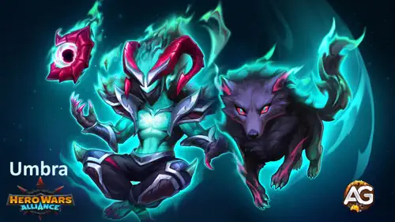
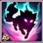
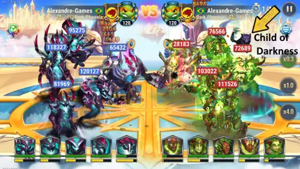
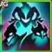
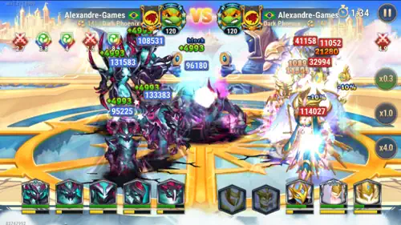
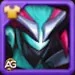
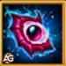
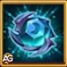
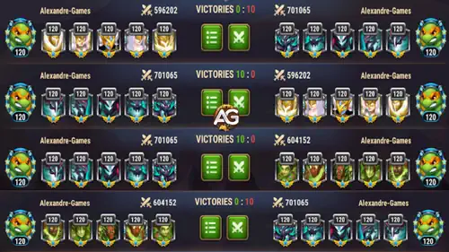

Guia del Titan Umbra: Domina al Invocador de Oscuridad en Hero Wars Alliance
- Por: Alexandre Domingos. .
Umbra es la pieza final en el mosaico de la supremacia de la Oscuridad. Este temible Invocador y su poderosa creacion sombria aplastaran a los enemigos en el campo de batalla, drenando la Energia que necesitan para contraatacar. Si alguna vez te sentiste impotente viendo a tus titanes perder impulso en PVP, Umbra es la respuesta — cambia el rumbo al privar a tus oponentes mientras alimenta a tu propio equipo.
Como Invocador de Oscuridad, Umbra aporta una dimension completamente nueva a las batallas de titanes. Su sinergia con Brustar, Mort, Tenebris y Keros es devastadora — y cuando los 6 Titanes de Oscuridad estan juntos en el campo de batalla, el equipo enemigo enfrenta un desafio casi imposible. Ya sea que estes construyendo un equipo completo de Oscuridad o buscando el counter perfecto contra equipos de Luz y Tierra, esta guia te mostrara todo lo que necesitas para dominar a Umbra.

Quien es Umbra?
Umbra es un Titan del elemento Oscuridad con el rol de Invocador, posicionado en la Linea Media de tu equipo. Completa la faccion de Oscuridad trayendo una mecanica unica de drenaje de energia que ningun otro titan ofrece. Su invocacion Hijo de la Oscuridad no ataca — en su lugar, drena silenciosamente el 50% de Energia de los enemigos cercanos antes de transferir toda esa Energia robada a tu aliado mas fuerte.
- Rol: Invocador
- Elemento: Oscuridad
- Posicion: Linea Media
- Sinergia: Titanes de Oscuridad (Brustar, Mort, Tenebris, Keros) — especialmente cuando hay 6 de ellos en el campo de batalla
Estadisticas de Umbra a Nivel Maximo
- Salud: 9.527.464
- Ataque Fisico: 538.802
- Dano Extra contra Titanes de Fuego, Tierra y Agua: 255.000
- Defensa Extra contra Titanes de Fuego, Tierra y Agua: 100.500
El verdadero poder de Umbra reside en su capacidad para controlar el flujo de la batalla. Al drenar la Energia enemiga, niega a los oponentes sus habilidades definitivas mientras acelera las rotaciones de skills de tu propio equipo.
Cuantos mas Titanes de Oscuridad tengas vivos en el campo de batalla, mas fuerte se vuelven Umbra y todo tu equipo a traves de su pasiva Vinculo Sombrio. Con 6 Titanes de Oscuridad, el equipo obtiene una reduccion masiva del 50% en el dano recibido.
Pros y Contras de Umbra - Hero Wars Alliance: Mobile
Pros
- Mecanica unica de drenaje de Energia — roba el 50% de Energia de los enemigos cercanos, paralizando sus habilidades definitivas
- Transfiere toda la Energia drenada al Titan aliado con mayor Energia actual, potenciando a tu luchador mas fuerte
- La pasiva Vinculo Sombrio proporciona poderosos bonos acumulativos con mas Titanes de Oscuridad vivos
- Con 6 Titanes de Oscuridad, otorga 50% de reduccion de dano a todo el equipo
- Los enemigos pierden 100 de Energia cada vez que reciben dano de Titanes de Oscuridad (con 5 Titanes)
- Obtiene +400 de Energia por uso de habilidad con 4 Titanes de Oscuridad
- Fuerte counter contra equipos de Titanes de Tierra (especialmente composiciones con Verdoc)
- Esencial para completar el plantel completo de la faccion de Oscuridad
Contras
- Sin dano directo — el Hijo de la Oscuridad no ataca, haciendo que Umbra dependa totalmente de companeros para el dano
- Requiere composicion completa de Oscuridad para maxima efectividad
- Los Titanes de Luz (Rigel, Solaris, Iyari, Amon) tienen ventaja elemental y contrarrestan equipos de Oscuridad
- Lumira (Invocadora de Luz) es especialmente fuerte contra la composicion de Umbra en posiciones defensivas
- El Hijo de la Oscuridad solo dura 4,0 segundos — una ventana corta que exige timing preciso
- El drenaje de Energia depende de la proximidad, formaciones enemigas dispersas reducen la efectividad
- Alta inversion requerida — necesita artefactos y equipo completo de Oscuridad construido a su alrededor
Guia de Skills de Umbra - Hero Wars Alliance
Las skills de Umbra giran en torno a la manipulacion de Energia y la sinergia de Oscuridad. Entender como funciona cada skill es la clave para dominar las batallas PVP con la faccion de Oscuridad.

Hijo de la Oscuridad (Ultimate)
Umbra invoca un Hijo de la Oscuridad detras del equipo enemigo. Piensalo como un espia sombrio plantado en la retaguardia enemiga — no se mueve, no ataca, pero silenciosamente roba su Energia. Esto es lo que hace a Umbra tan aterrador en PVP: mientras el enemigo espera para usar sus poderosas habilidades definitivas, el Hijo de la Oscuridad esta drenando su combustible.
Como Funciona (Paso a Paso):
- 1. Umbra usa su ultimate y coloca al Hijo de la Oscuridad detras del equipo enemigo.
- 2. El Hijo inmediatamente comienza a drenar 50% de Energia de todos los enemigos cercanos — esto es enorme! Imagina enemigos a punto de usar sus ultimates devastadoras, y de repente la mitad de su Energia desaparece.
- 3. Despues de 4,0 segundos, el Hijo desaparece.
- 4. Toda la Energia drenada se transfiere al Titan aliado con la mayor Energia actual — esta es la parte genial. Tu titan mas fuerte recibe un impulso de Energia justo cuando lo necesita.
Formula de Drenaje de Energia:
Energia Drenada por Enemigo = Energia Actual del Enemigo x 50%
Energia Transferida = Total de Energia Drenada de Todos los Enemigos Cercanos al Titan Aliado con Mayor Energia Actual
Por Que Esto Importa en PVP: En batallas de titanes, las ultimates deciden los juegos. Al retirar el 50% de Energia de multiples enemigos a la vez, Umbra puede retrasar o impedir completamente que el equipo enemigo use sus habilidades clave. Esto crea un efecto bola de nieve — cuanta mas Energia robas, mas ventaja obtiene tu equipo.
Mecanicas Importantes:
- El Hijo de la Oscuridad no se mueve ni ataca — existe unicamente para drenar Energia.
- Solo dura 4,0 segundos, asi que la ventana de drenaje es corta pero devastadora.
- El drenaje afecta a enemigos cercanos — el posicionamiento importa!
- El Hijo se considera un Titan de Oscuridad para todos los propositos de sinergia e interaccion.


Vinculo Sombrio (Pasiva)
Vinculo Sombrio es la skill pasiva de Umbra, y posiblemente la parte mas impactante de todo su kit. Piensalo como un "bono de amistad" para Titanes de Oscuridad — cuantos mas aliados de Oscuridad esten vivos en el campo de batalla, mas fuerte se vuelven todos.
Bonos Acumulativos por Cantidad de Titanes de Oscuridad:
- 2 Titanes de Oscuridad: +Bono a Ataque Extra contra Titanes de Luz
- 3 Titanes de Oscuridad: +Bono a Defensa Extra contra Titanes de Luz
- 4 Titanes de Oscuridad: Umbra obtiene +400 de Energia al usar habilidades
- 5 Titanes de Oscuridad: Los enemigos pierden 100 de Energia cada vez que reciben dano de Titanes de Oscuridad
- 6 Titanes de Oscuridad: Reduce el dano recibido en un 50%
Formula: Dano y Defensa Extra = 134.701 (25% del ATK).
Por Que Esto Importa en PVP: Vinculo Sombrio crea una ventaja escalable. Con 4 Titanes, Umbra se convierte en una maquina de drenaje de Energia. Con 5, la perdida constante de 100 de Energia por golpe significa que el equipo enemigo se esta agotando lentamente. Con 6, la reduccion del 50% de dano hace que tu equipo sea casi inmortal.
Nota Estrategica: Recuerda que el Hijo de la Oscuridad invocado por la ultimate de Umbra cuenta como un Titan de Oscuridad mientras esta activo. Esto significa que incluso con solo 3 Titanes de Oscuridad y 2 Titanes de otro elemento, Umbra puede activar el 4to bono de sinergia (+400 Energia) cuando el Hijo esta en el campo.

Mejor Skin para el Titan Umbra Hero Wars Alliance
Umbra actualmente solo tiene una skin disponible. El Ataque Fisico aumenta su dano base pero no afecta el drenaje de Energia del Hijo de la Oscuridad.

Skin Predeterminada
Ataque Fisico: +196.800
Prioridad de Evolucion para PVP: Media – El Ataque Fisico aumenta el dano de auto-ataque de Umbra pero no mejora el drenaje de Energia del Hijo de la Oscuridad, su habilidad principal. Invierte aqui solo despues de maximizar el Sello de Invocacion y el Artefacto de Arma.
Prioridad de Evolucion para Dungeon: Baja – Umbra no es un titan central de Dungeon. Guarda los recursos de evolucion de skin para titanes enfocados en Dungeon a menos que uses composiciones de Oscuridad en Dungeon.
Prioridad de Evolucion de Artefactos de Umbra - Hero Wars Alliance
Los artefactos de Umbra lo convierten en una eleccion esencial contra equipos de Tierra con Verdoc y fortalecen toda la faccion de Oscuridad contra composiciones de Luz en ataque.

Cuerno de Nephtis (Artefacto de Arma)
Efecto: Cuando Umbra usa la skill Hijo de la Oscuridad en combate, activa un efecto que otorga +Defensa Extra contra Titanes de Fuego, Tierra y Agua: +150.000 a todo el equipo por 9 segundos.
Probabilidad de Activacion: 100%
Prioridad de Evolucion para PVP: Alta – Este artefacto proporciona un buff defensivo garantizado para todo el equipo cada vez que Umbra invoca.
Prioridad de Evolucion para Mazmorra: Media – El buff defensivo es util en Mazmorra ya que enfrentas Titanes de Fuego, Tierra y Agua frecuentemente.

Corona de Oscuridad
Dano Extra contra Titanes de Fuego, Tierra y Agua: +255.000
Defensa Extra contra Titanes de Fuego, Tierra y Agua: +100.500
Prioridad de Evolucion para PVP: Media – La Corona proporciona bonos solidos ofensivos y defensivos contra elementos de Fuego, Tierra y Agua.
Prioridad de Evolucion para Mazmorra: Media-Alta – En Mazmorra, encuentras Titanes de Fuego, Tierra y Agua constantemente.

Artefacto Sello de Invocacion
Ataque Fisico: +90.000
Salud: +4.275.000
Prioridad de Evolucion para PVP: Muy Alta – ARTEFACTO DE MAXIMA PRIORIDAD! El Sello de Invocacion proporciona impresionantes +4.275.000 de Salud que aumentan directamente la supervivencia de Umbra. Un Umbra muerto no drena Energia — mantenlo vivo, y el equipo de Oscuridad domina.
Prioridad de Evolucion para Mazmorra: Baja – A pesar de las excelentes estadisticas, Umbra no es un titan central de Mazmorra.
Como Derrotar al Titan Umbra - Hero Wars Alliance
El equipo de Oscuridad de Umbra es devastador, pero tiene debilidades claras. Los Titanes de Luz tienen ventaja elemental y pueden desmantelar composiciones de Oscuridad cuando estan posicionados correctamente.
Amon (Tirador — Luz): El alto Ataque Fisico de Amon causa dano devastador a los Titanes de Oscuridad gracias a la ventaja elemental de la Luz. Su dano burst enfocado puede eliminar rapidamente objetivos clave como Umbra o Keros.
Iyari (Soporte/Curadora — Luz): Iyari sustenta al equipo de Luz en peleas prolongadas, contrarrestando directamente la estrategia de drenaje de Energia de Umbra.
Lumira (Invocadora — Luz): Lumira es especialmente fuerte contra la composicion de Oscuridad de Umbra en posicion defensiva. Su pasiva Sol Eterno proporciona bonos acumulativos para Titanes de Luz — incluyendo Ataque y Defensa Extra contra Titanes de Oscuridad.
Rigel (Tanque — Luz): Los escudos masivos de Rigel absorben el dano que los Titanes de Oscuridad infligen. Como Tanque de Luz, tiene resistencia elemental natural contra ataques de Oscuridad.
Solaris (Super Titan — Luz): Solaris proporciona dano increible y efectos de control de masas que pueden desestabilizar la formacion de Oscuridad.
Titanes de Oscuridad en Batallas
Los Titanes de Oscuridad destacan en ataques coordinados, aprovechando sus habilidades unicas para controlar el campo de batalla y drenar los recursos del enemigo. Su sinergia es particularmente evidente cuando los seis Titanes de Oscuridad estan presentes, creando un desafio formidable para cualquier equipo rival.
A continuacion se muestra una representacion visual de sus esfuerzos coordinados en batalla contra Titanes de Tierra y Luz:

Conclusion - Desata la Sombra con Umbra
Umbra no es solo otro titan — es la piedra angular que transforma la faccion de Oscuridad de fuerte a imparable. Su mecanica unica de drenaje de Energia a traves del Hijo de la Oscuridad crea un ciclo devastador: los enemigos pierden la capacidad de reaccionar mientras tu equipo acelera hacia la victoria.
Para maximizar el potencial de Umbra, prioriza el artefacto Sello de Invocacion por su masivo bono de Salud, seguido del Cuerno de Nephtis por el buff defensivo para todo el equipo. Construye un equipo completo de Oscuridad con Brustar, Mort, Tenebris y Keros para desbloquear los increibles bonos acumulativos del Vinculo Sombrio.
Ten cuidado con las composiciones de Titanes de Luz, particularmente equipos liderados por Lumira en posiciones defensivas. Sin embargo, en ataque contra equipos de Tierra con Verdoc, Umbra y el escuadron de Oscuridad son virtualmente imbatibles. Domina las sombras y deja que Umbra lidere tu ejercito de Oscuridad hacia la dominacion total!
Sugerencia de Video

Explora nuevas habilidades con nuestras guias destacadas!
Deja Tu Opinion!
Te gusto nuestra Guia del Titan Umbra? Hay algo que no entendiste o te gustaria sugerir cambios? Te invitamos a unirte a nuestra seccion de comentarios en la pagina del Blog Alexandre Games.
Haz clic en el boton de abajo para comenzar: